Itens¶
Itens¶
Todos os itens do servidor estão na Database de itens.
Itens alterados¶
Armas¶
| Item | Mudança | |
|---|---|---|
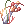 |
Espada Elemental [3] | As Lanças de Gelo automáticas só saem da espada na mão direita; com duas espadas, a chance não soma |
 |
Jamadhar Glorioso | Não ignora mais 20% da defesa de humanoides; no lugar, dano crítico +20% |
 |
Cajado do Feiticeiro (Osso de Lich) | Espiritualista também equipa |
 |
Cajado Perfurante | Espiritualista também equipa |
 |
Cajado de Espinhos da Escuridão | Espiritualista também equipa |
| Arco de Luna | DEF +2, +3 a partir do +6 e +5 a partir do +9 (era 2/5/7) | |
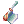 |
Machado Veterano | ATQ +10 por habilidade de forja no nível 2 ou mais (antes só no 3) |
 |
Cajado de Cura | Também cai da Margaretha Sorin (Laboratório de Biologia) |
 |
Machado Vecer [2] | Agora cai do Majoruros |
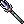 |
Tridente [2] | Saiu das lojas de armas (Prontera, Comodo, Einbroch e Sala VIP). Cai do Merman e pode ser forjado. Um Tridente +10 vira Lança Gigante |
| Soqueiras | Dano em tamanho pequeno 100%, médio 100% e grande 75% (era 100/75/50) |
Equipamentos¶
| Item | Mudança | |
|---|---|---|
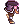 |
Botas Temporais | Bônus novos, veja abaixo |
| Chapéu de Pintinho | Também reduz em 3% o dano de monstros Brutos | |
| Máscara da Morte (Coroa da Mentira) | INT +3 (era 4). Agora cai do Bispo Decadente | |
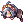 |
Boneca de Denise | Sem o FOR +2 |
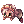 |
Boneca de Sofia | Sem o INT +2 |
 |
Chapéu de Abóbora do Festival | Todos os atributos +3; dano físico e mágico +5% contra Demônio; -5% de dano de Demônio |
 |
Chapéu de Cachorrinho | Com 77 ou mais de AGI base, a Glória automática sai com 5% (era 3%) |
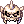 |
Elmo do Rei Youkai | Nível necessário 1 (era 70) |
| Chapéu de Jiboia (Cabeça de Cobra) | Sem slot. Agora cai do Senhor das Serpentes | |
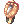 |
Medalha de Honra | Taekwon também equipa |
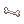 |
Piercing de Umbala | HP máximo +1% (no lugar de VIT +1); Carne recupera +25%; 1% de chance de ganhar Carne ao derrotar monstros |
| Poderoso Chapéu de Bruxa | DEF 1 (era 10) |
Itens que agora caem de monstros¶
Chance antes das rates do servidor (no jogo, multiplique pela rate de drop: 9x na semana, 12x no fim de semana; MVPs 5x e 9x).
| Item | Monstro | Chance | |
|---|---|---|---|
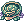 |
Chapéu de Hermod [1] | Algoz Eremes (Laboratório de Biologia) | 3% |
 |
Espírito Angelical | Valquíria Randgris | 0,45% |
 |
Olhos Biônicos | Vesper | 0,42% |
|
Cajado de Cura | Margaretha Sorin | 0,2% |
| Anubis | 0,07% (era 0,1%) | ||
| Máscara da Morte (Coroa da Mentira) [1] | Bispo Decadente | 1,2% | |
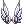 |
Asas de Sigrun | Grifo | 0,18% |
| Chapéu de Jiboia | Senhor das Serpentes | 0,18% | |
|
Machado Vecer [2] | Majoruros | 0,04% |
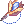 |
Broche de Bradium [1] | Golem de Bradium | 0,01% |
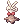 |
Chapéu de Sting | Sting | 0,01% |
Cartas¶
| Carta | Mudança | |
|---|---|---|
 |
Carta Flor do Luar | Velocidade de movimento +40% (era 25%) |
 |
Carta Presente (Caixa Misteriosa) | Caixa de Presente com 2,25% (era 0,3%) |
 |
Carta Shinobi | A Furtividade automática não funciona com o conjunto das cartas de Gatuno equipado |
 |
Carta Relógio | Quando o Bloqueio sai de novo com ele já ativo, o tempo renova (antes desligava) |
Consumíveis e outros¶
| Item | Mudança | |
|---|---|---|
 |
Asas de Mosca (normal, de Iniciante e Ilimitada) | Funcionam durante a Fúria (Berserk) |
 |
Martelos de forja e kits de culinária | Só são gastos quando você tenta criar (abrir e fechar a janela não gasta mais) |
 |
Espelho Convexo | Uma vez a cada 60 minutos |
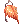 |
Amuleto de Siegfried | Ressuscita uma vez a cada 15 minutos |
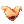 |
Natureza Grandiosa | Não pode ser enviada pelo correio |
| Todos os itens | Intervalo entre usos de itens de 0,05 s (era 0,1 s) |
Mudanças de 03/11¶
| Item | Mudança | |
|---|---|---|
 |
Bandeira Nacional | Peso 0,1 (era 1). Agora pode ser guardada no armazém, negociada, vendida para NPC e na loja de mercador |
 |
Carta Besouro-Ladrão Dourado | Reduz o dano mágico recebido em 40% (não é mais imunidade) |
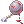 |
Bola de Ferro Ensanguentada | Agora com 1 slot. O bônus de conjunto (ATQ +50 e resistência a prisioneiros) vale com os Grilhões e também com o Sleipnir. Sai da Caixa Rara (1%) |
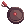 |
Frigideira Lunar | 4 slots (eram 3) |
|
Olhos Biônicos | Agora com 1 slot |
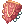 |
Escudo de Escamas de Naga | Sai da Caixa Misteriosa (2%) |
 |
Infiltrador | O da Caixa Misteriosa agora vem com slot |
 |
Caixa de Comidas +10 | Dá 10 de cada comida +10 (antes era 1) |
 |
Velho Álbum de Cartas | Anuncia para o servidor a carta que saiu |
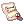 |
Licença de Loja de Compra | Abre uma loja de compra com 5 itens; 20 Moedas de Loki |
 |
Chapéu de Bandeira Brasileira | Ganhou sprite (o do cliente não existia; usa o laço da Bandeira Brasileira) |
 |
Suco de Uva | 4.000z na Utilidades VIP |
 |
Ovo de Grand Orc | Novo nome do Ovo de Orc Superior |
Visual da Fortuna¶
 Visual da Fortuna (visual do meio, com a aparência das Asas Malignas). A cada monstro derrotado com ele equipado:
1% de chance de 1 Bandeira, 1% de 1 Moeda de Loki, 0,5% de 1 Moeda Dourada e 0,01% de um
Visual da Fortuna (visual do meio, com a aparência das Asas Malignas). A cada monstro derrotado com ele equipado:
1% de chance de 1 Bandeira, 1% de 1 Moeda de Loki, 0,5% de 1 Moeda Dourada e 0,01% de um
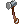
Martelo de Refinar Carta (para o refino de cartas, que chega em breve). Vem da Caixa Misteriosa Rara (0,5%), do Trocador de Bandeiras (15.000), do Gerente de Moedas Douradas (3.000) e do Evento de Lançamento (300). O Martelo também sai das Caixas Misteriosas.Armas lendárias: veja Armas lendárias.
Arco Élfico¶
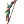
Arco Élfico [2]: ATQ 160, DES +2, nível 90, Arqueiros, Bardos, Odaliscas e evoluções.- Com a
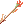
Flecha Élfica: dano físico a distância +50%. - Com o Tesouro do Arruaceiro e o Coração Gélido: dano contra monstros de tamanho Médio +20%.
- Vem do Forjador de Armas (Arco de Orc +10). A Flecha Élfica está na loja do Arqueiro, do Bardo e da Odalisca na Sala VIP.
Lança Gigante e Chave Dourada¶
Novas armas do Forjador de Armas:
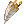
Lança Gigante [2] (Lorde e Paladino) e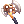
Chave Dourada [2] (Mestre-Ferreiro).Cupons¶
| Cupom | Onde usar | |
|---|---|---|
 |
Cupom de Cor de Roupa | Estilista |
 |
Cupom de Cor Infinito | Estilista: com ele no inventário, tudo de graça |
 |
Cupom de Troca de Nome | Resgatador de Cupons |
 |
Cupom de Troca de Sexo | Resgatador de Cupons |
 |
Cupom de Nome de Guilda | Resgatador de Cupons |
 |
Cupom de Vaga de Personagem | Resgatador de Cupons |
 |
Ficha de 1 Bilhão de Zeny | Cambista do Bilhão |
Itens novos e alterados (antes)¶
Manto Demoníaco¶
Visual de cabeça (topo), presente de boas-vindas (Começando).
- Todos os atributos +10
- HP máximo +5%, SP máximo +10%
- DEF +10
- Só pode ser equipado até o nível 90. Acima disso, sai do corpo sozinho.
- Preso à conta.
Chapéu de Bebê Dragão¶
- Ataque Duplo nível 8 (era 5).
- Ao atacar: 5% de chance de Dilúvio nível 4 e 7% de Esferas d'Água nível 4.
- Esferas d'Água com +400% de dano.
Chapéu de Rideword¶
30% de chance de converter 15% do dano físico em HP e 30% em SP.
Boina Alada¶
DEF 11 (era 1).
Botas Temporais¶
Botas de FOR, AGI, VIT, INT, DES e SOR, com slot, só para transclasse. Vêm do Trocador de Bandeiras. Todas dão HP máximo +300 e SP máximo +30, e mais HP +100 e SP +10 a cada 3 refinos:
| Bota | A cada 3 refinos | Com o atributo base alto |
|---|---|---|
| FOR | FOR +1 | FOR 90+: dano físico +5% |
| AGI | Velocidade de ataque +3% | AGI 90+: velocidade de ataque +3% |
| VIT | HP +200 (no lugar de +100) e HP +4% (base HP +500) | VIT 75+: HP +10% |
| INT | INT +1 e DES +1 | INT 90+: ATQM +5% |
| DES | DES +1 | DES 90+: dano a distância +5% |
| SOR | Dano crítico +5% | SOR 50+: dano crítico +10%; SOR 70+: dano crítico +15% e DEFM +5 |
Arco dos Orcs [3]¶
Arco dos Orcs com 3 slots. O Orc Archer derruba o [3] com 0,1% e o normal com 1% (antes 0,02%). Também sai da Caixa Misteriosa (1%).
Slots extras¶
| Item | Slots |
|---|---|
| Rosa Romântica | 2 |
| Óculos Amorzinho (também +5 em todos os atributos) | 2 |
| Óculos [1] | 2 |
| Óculos Escuros [1] | 2 |
Consumíveis¶
| Item | Mudança |
|---|---|
| Suco de Uva | Peso 0,5 (era 4); 4.000z na Utilidades VIP |
| Enciclopédia de Combate 200% | Dura 30 minutos |
| Chicle de Bola 200% | Dura 30 minutos |
| Manual de Classe 100% e 200% (novos) | EXP de classe +100% / +200% por 30 minutos |
| Manual de Combate 300% | EXP de base +300% por 30 minutos (só das caixas) |
| Goma de Mascar 250% | Drop +250% por 30 minutos (só das caixas) |
| Asa de Mosca Ilimitada | Asa de Mosca que não acaba |
| Bênção do Ferreiro | Protege o equipamento no refino. Mestre Ferreiro |
| Agulha e Linha | Transforma um chapéu em visual. Chapeleira |
Itens que vendem por menos para NPC¶
Para evitar lucro fácil: flechas, gemas, balas e outros consumíveis vendidos a 1 zeny nas lojas da Sala VIP vendem por 0. Alguns itens (como Salada Verde, Espelho de Cristal, Rosa Congelada, Rosa Eterna, Khukri e anéis) têm preço de venda menor.